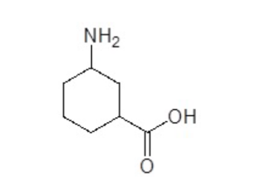
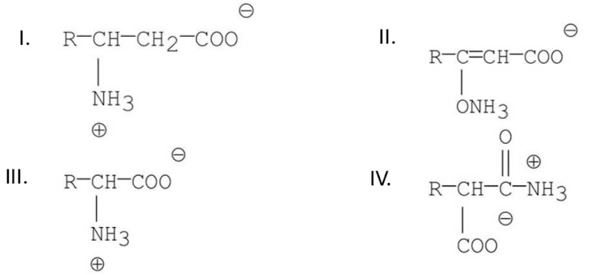
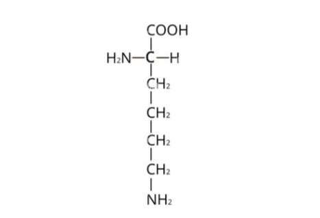
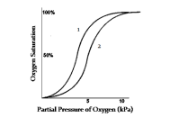

Domande Biochimica
1. Quale particella atomica determina il comportamento chimico di un atomo?
Elettrone
Neutrone
Protone
Nucleo
2. Gli atomi sono costituiti da tre particelle fondamentali. Che carica hanno?
Protone (+1); neutrone (-1) ed elettrone (0)
Protone (-1), neutrone (0) ed elettrone (+1)
Protone (-1), neutrone (+1) ed elettrone (0)
Protone (+1), neutrone (0) ed elettrone (-1)
3. Un legame covalente doppio è formato da ________ di elettroni
2 paia
4 paia
3 paia
1 paio
4. Gli isotopi differiscono tra loro nel numero di ________
Neutroni
Neutroni e protoni
Protoni
Elettroni
5. Atomi con elettronegatività uguale o molto simile formano in genere
legami covalenti non polari/apolari
legami ionici
legami covalenti polari
nessun legame
6. Quale molecola o composto tra i seguenti contiene un legame covalente omopolare o puro?
SCl6
Li2CO3
NaCl
Br2
7. Quale/i delle seguenti affermazioni è/sono CORRETTA/E?
I i legami ionici si formano quando uno o più elettroni di valenza sono trasferiti da un atomo all altro
II i legami covalenti consistono nella condivisione di elettroni tra atomi
III in molti composti legati in modo covalente gli elettroni NON sono condivisi equamente tra gli atomi
1, 2 e 3
2
1 e 2
1
8. Una reazione chimica si dice spontanea se:
Viene utilizzato un catalizzatore
ΔG° < 0
ΔG° > 0
G° = 0
9. Quale delle seguenti affermazioni descrive correttamente una reazione con ΔG negativo?
La reazione avviene molto rapidamente
Non presenta uno stato di transizione
La reazione è esoergonica
I prodotti sono meno stabili dei reagenti
10. Quale delle seguenti affermazioni riguardanti il pH NON è VERA?
Molte reazioni fisiologiche sono sensibili al pH
In una soluzione tampone, il pH cambia poco con l’aggiunta di piccole quantità di un acido o una base forte
pH = log [H+]
Il pH dell’acqua pura è 7
11. Quali gruppi funzionali contiene la seguente molecola?

Un'ammina primaria e un acido carbossilico
Un'ammina primaria, un chetone e un alcol
Un'ammina secondaria e un acido carbossilico
Un'ammina secondaria e un alcol
12. I gruppi funzionali:
Conferiscono al composto una reattività tipica e simile a quella di altri composti contenenti lo stesso gruppo
Determinano esclusivamente le caratteristiche fisiche di una molecola
Contengono esclusivamente ossigeno e azoto
Non influenzano in nessun modo la reattività della molecola
13. Una molecola è chirale se:
Non possiede una forma enantiomerica
Presenta un centro di simmetria
È sovrapponibile alla sua immagine speculare
Non è sovrapponibile alla sua immagine speculare
14. Le reazioni tendono ad avvenire più _________ all’aumentare della temperatura perché ________ il numero di collisioni molecolari con sufficiente energia per superare _________
velocemente; diminuisce; l’energia di attivazione
lentamente; aumenta; l’energia di attivazione
velocemente; aumenta; l’energia di attivazione
lentamente; diminuisce; l’entalpia
15. Quale delle seguenti affermazioni è errata?
Due enantiomeri ruotano il piano della luce polarizzata dello stesso angolo ma in direzione opposta
Gli enantiomeri sono immagini speculari non sovrapponibili
Due enantiomeri hanno diverse proprietà fisiche
Gli enantiomeri sono stereoisomeri
16. Quali dei seguenti composti sono zwitterioni?
1, 2, 3
1, 2
1, 2, 3, 4
4
17. Quale delle seguenti molecole è un a-aminoacido?

IV
II
I
III
18. Cosa si intende per punto isoelettrico (pI)?
Il pH a cui un amminoacido, un polipeptide, o una proteina hanno carica negativa
Il pI è una caratteristica degli amminoacidi neutri
Il pH a cui un amminoacido, un polipeptide, o una proteina hanno carica positiva
Il pH a cui un amminoacido, un polipeptide, o una proteina non hanno carica netta
19. Ad un pH più acido rispetto al suo punto isoelettrico (pI), un amminoacido porterà:
una carica netta negativa
una carica netta positiva
una carica positiva pari alla carica negativa
nessuna carica ionica
20. Nell’immagine è rappresentata la struttura dell’aminoacido lisina. Qual è la carica della lisina a pH 11?

-1
2
1
-2
21. La formazione di un legame peptidico tra due aminoacidi:
nessuna delle risposte
crea caratteri di parziale doppio legame tra tre atomi
mantiene le proprietà chimiche del tipico legame ammidico
permette rotazioni senza restrizione su ogni legame chimico
22. Quale delle seguenti affermazioni sulla struttura delle proteine è corretta?
La conformazione alfa-elica è stabilizzata da interazioni idrofobiche
Il folding di un polipeptide in una struttura globulare risulta internamente arricchito in aminoacidi idrofobici
La struttura primaria non influenza la struttura terziaria nativa
Le subunità delle proteine con struttura quaternaria si associano tramite legami covalenti
23. La sequenza primaria delle proteine è meglio descritta da quale delle seguenti affermazioni:
sono polimeri formati da legami ammidici tra il carbossile e i gruppi amminici di alfa-aminoacidi
sono sali di aminoacidi legati tra loro
contengono aminoacidi
sono polimeri formati da aminoacidi legati tramite legami idrogeno
24. Qual è la ragione che spiega la geometria planare del legame peptidico delle proteine?
Il carattere di parziale doppio legame del legame carbonio-azoto
Le proteine contengono solo L-aminoacidi
L'ingombro sterico
Il legame peptidico è trans piuttosto che cis
25. Tutte le seguenti affermazioni sul legame peptidico sono vere eccetto:
nelle proteine, non tutti i gruppi amminici prendono parte ai legami peptidici
il legame peptidico contiene un gruppo carbonilico
i legami peptidici possono essere formati da tutti gli aminoacidi presenti in natura
è possibile la libera rotazione attorno al legame peptidico
26. Tutte le seguenti affermazioni sulla struttura delle proteine sono vere eccetto una, quale?
Nell’alfa-elica, le catene laterali degli aminoacidi fuoriescono dalla struttura a spirale della catena polipeptidica
Il legame peptidico è un tipo di legame ammidico
Oltre ai legami peptidici, il legame idrogeno è l’interazione più importante nelle strutture a foglietto beta ripiegato e alfa-elica
Lo stato nativo di una proteina è la forma meno stabile in cellula e, di conseguenza, si denatura facilmente
27. Quale delle seguenti affermazioni sulle proteine è falsa?
La struttura ad alfa-elica è stabilizzata da ponti ad idrogeno
Per denaturazione proteica si intende la perdita della configurazione tridimensionale nativa o biologicamente attiva di una proteina
Si parla di struttura quaternaria quando la molecola è costituita da più di una catena polipeptidica
Tra le molecole proteiche, le proteine fibrose sono generalmente più solubili di quelle globulari
28. Quale interazione può essere coinvolta alla stabilizzazione della struttura terziaria, legando covalentemente diverse catene polipeptidiche?
Interazione idrofobica
Interazione elettrostatica
Legame peptidico
Legame disolfuro
29. Tutte le seguenti affermazioni circa la struttura ad alfa-elica sono vere eccetto una, quale?
L’alfa elica è stabilizzata principalmente da interazioni idrofobiche
I gruppi R degli aminoacidi in un’alfa-elica sono diretti all’esterno
L’alfa-elica può essere destrorsa
Ci sono 3.6 aminoacidi per giro dell’alfa-elica
30. Quale delle seguenti affermazioni relative alle proteine è vera?
Poiché i protoni che partecipano al legame peptidico non sono dissociabili, le cariche di una catena polipeptidica sono dovute solo al gruppo Nterminale e a quello C-terminale e alle catene laterali dei singoli amminoacidi
Per convenzione, la sequenza amminoacidica di una catena polipeptidica è scritta da sinistra a destra, partendo dall’estremità C-terminale verso quella N-terminale
Esistono proteine semplici e proteine coniugate. Quest’ultime sono formate dall’associazione di più catene proteiche
I legami peptidici sono molto deboli e dovuti ad interazioni elettrostatiche
31. Quale tra le seguenti affermazioni concernenti l’emoglobina è vera?
L’emoglobina contiene ferro, che quando si lega all’ossigeno viene ossidato
L’emoglobina è costituita da quattro catene proteiche: due legano l’ossigeno e due sono regolatorie
L’andamento dell’interazione tra emoglobina e ossigeno è di tipo iperbolico
A livello periferico la liberazione dell’ossigeno da parte dell’emoglobina è favorita da un abbassamento del pH
32. Durante un'attività fisica vigorosa, l'effetto Bohr potrebbe aumentare la distribuzione di O2 ai tessuti del corpo. Tutte le seguenti affermazioni sono associate a questo effetto nei tessuti, ECCETTO una, quale?
La curva di associazione ossigeno-emoglobina si sposta a destra
Gli ioni idrogeno vengono rilasciati dall'emoglobina ai tessuti
Ci sono alterazioni nei ponti salini nelle molecole di emoglobina
E’ stabilizzata la forma tesa dell'emoglobina
33. Quale delle seguenti considerazioni relative alla mioglobina è vera?
È un dimero
È localizzata a livello epatico
Presenta una maggior affinità per l'ossigeno rispetto all'emoglobina
La curva di saturazione con l'ossigeno ha andamento sigmoidale
34. L’affinità dell’emoglobina (Hb) per l’ossigeno (O2) è incrementata dall’aumento della concentrazione di:
O2
H+
NO
CO2
35. Le similarità tra emoglobina e mioglobina includono:
la forma della curva di dissociazione dell'ossigeno
eme come gruppo prostetico
gli effetti del pH sul legame all'ossigeno
la conversione dalla conformazione tesa a rilassata all'incremento di pO2
36. Nella globina, il residuo prossimale di istidina partecipa:
al legame di un protone con un effettore allosterico
al legame di coordinazione del componente ferro dell'eme
nessuna delle opzioni
alla discriminazione nel legame tra O2 e CO
37. Quale delle seguenti affermazioni relative alla mioglobina è vera?
trasporta ossigeno nel sangue
contiene 4 catene globiniche diverse da quelle dell'emoglobina
contiene 2 catene alfa e 2 catene beta
non possiede struttura quaternaria ma struttura terziaria
38. Il grafico mostra le curve di saturazione di due proteine che legano l’ossigeno, l’emoglobina adulta ed emoglobina fetale. Quale curva descrive il comportamento dell’emoglobina fetale?

Curva 2, perché indica una minore affinità per l’ossigeno
Curva 2, perché indica una maggiore affinità per l’ossigeno
Curva 1, perché indica una maggiore affinità per l’ossigeno
Curva 1, perché indica una minore affinità per l’ossigeno
39. La mioglobina è:
Un monomero
Una proteina allosterica
Formata da 4 α eliche nella sua struttura secondaria
Un tetramero formato da due subunità a e 2 subunità β
40. L'emoglobina:
Racchiude il gruppo eme, assieme allo ione Fe2+, che permettono la funzione della proteina
Ha una curva di saturazione iperbolica
Lega il 2,3-bisfosfoglicerato che favorisce lo stato R dell’emoglobina
Lega l'O2 attraverso i suoi amminoacidi
41. Quale affermazione sugli enzimi è vera?
Un alto valore di Km indica un'alta affinità per il substrato
Gli enzimi durante la catalisi si modificano in modo irreversibile
Gli enzimi non possono essere regolati
Gli enzimi sono catalizzatori biologici che accelerano le reazioni biochimiche abbassando l'energia di attivazione
42. Quale dei seguenti metodi è usato per regolare l’attività enzimatica:
Modificazione covalente
Tutti i metodi sono usati per regolare l’attività di un enzima
Sintesi e degradazione dell’enzima
Regolazione allosterica
43. Nel caso in cui un enzima abbia una relazione sigmoidale tra la velocità e la concentrazione del substrato, si può concludere che:
L’enzima mostra cooperatività, in termini di legame, col substrato
Il legame di una molecola di substrato ostacola il legame delle altre
L’enzima contiene solo un sito di legame per il substrato
L’enzima contiene almeno quattro subunità
44. La Km in una reazione enzimatica indica:
La concentrazione del substrato alla quale l’enzima è saturato
Il numero di molecole di substrato trasformate per unità di tempo
La concentrazione del substrato alla quale la reazione decorre a ½ Vmax
La concentrazione del substrato alla quale la reazione decorre a Vmax
45. Per quale motivo la curva in un grafico di Michelis-Menten raggiunge il plateau?
Perché è presente un inibitore non competitivo
Perché tutto il substrato è stato convertito in prodotto
Perché è presente un inibitore competitivo
Perché l’enzima si satura
46. Quale delle seguenti affermazioni riguarda gli enzimi allosterici?
Gli enzimi allosterici seguono la cinetica di Michelis-Menten
Gli enzimi allosterici non hanno la Vmax
Il legame ad un sito modifica l’affinità di legame in altri siti
L’andamento della curva è lineare per gli enzimi allosterici
47. Quale delle seguenti affermazioni è vera?
Il glucosio è un chetoesoso
Il glucosio è un disaccaride
Il glucosio è un aldoesoso
Il glucosio è un aldopentoso
48. Di che tipo sono i legami tra le unità di glucosio nella cellulosa?
β-1,4
α-1,4
α-1,6
α-1,2
49. Un aldopentoso ______________.
È un monosaccaride e contiene il gruppo RCO
È un disaccaride e contiene il gruppo CHO
È un’oligosaccaride e contiene il gruppo RCO
È un monosaccaride e contiene il gruppo CHO
50. Quale delle seguenti affermazioni relative al glicogeno è VERA?
Contiene residui di fruttosio
È un polimero del glucosio privo di ramificazioni
È un polimero del glucosio contenente legami alfa-glicosidici
È particolarmente abbondante nel muscolo dove funge da riserva energetica per l'intero organismo
51. Qual è la formula generale di un carboidrato?
Cn(H2O)n
Cn(HO)n
CnH2n+2
CnH2n
52. Il legame N-glicosidico è molto importante in quanto alla base di quale biomolecole?
Proteine
Lipidi
DNA e RNA
Steroidi
53. Quale delle seguenti affermazioni sul glucosio è falsa?
Contiene 6 atomi di carbonio
È un aldoso
È un monosaccaride
Nella forma lineare possiede 3 carboni asimmetrici
54. Il glicogeno nel muscolo:
serve soprattutto come tampone dei livelli ematici di glucosio
serve come fonte di glucosio-6-fosfato che viene di seguito fosforilato dalla glucosio-6-fosfatasi e trasportato fuori dalla cellula
serve come fonte di combustibile per la sintesi di ATP in questo tessuto
è rapidamente esaurito durante il digiuno
55. Quale fra le seguenti affermazioni descrive correttamente la differenza tra amilosio e amilopectina?
L’amilosio è un polisaccaride a catena lineare, mentre l’amilopectina è un polisaccaride ramificato
L’amilosio contiene legami α-1,6-glicosidici, mentre l’amilopectina non li contiene
L’amilosio è una fra le molecole più grandi ritrovate in natura, mentre l’amilopectina è una fra le molecole più piccole ritrovate in natura
L’amilosio è composto da migliaia di unità di D-glucosio, mentre l’amilopectina è composta da migliaia di unità di D-galattosio
56. Quali tra le seguenti molecole sono disaccaridi?
I, II, III
I, III, IV, V
I, III, IV
III, IV, V
Invia
Ripeti Quiz